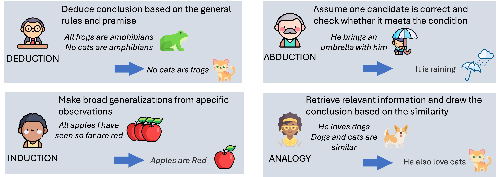
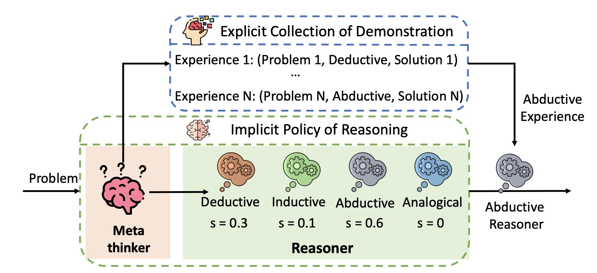
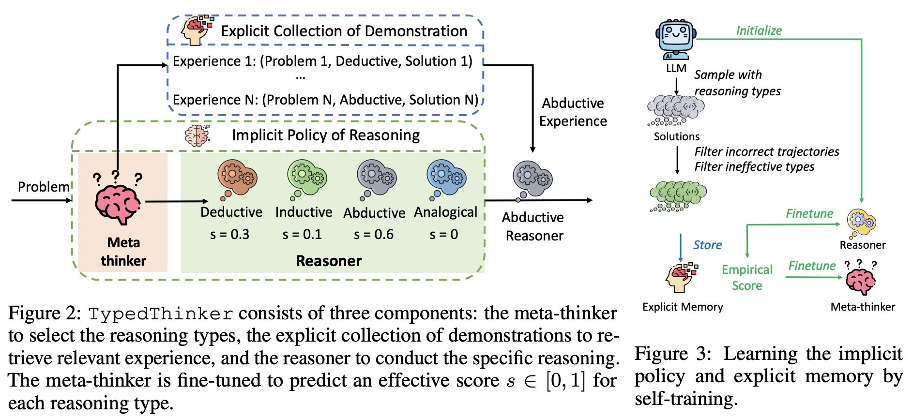
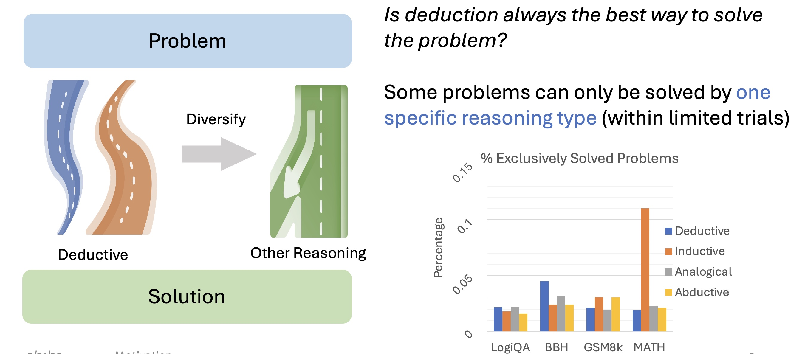
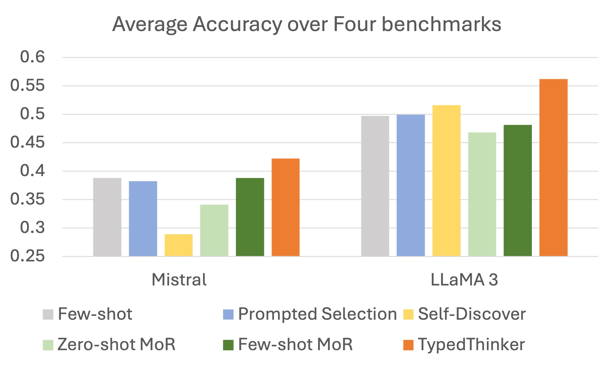

Large Language Models (LLMs) have demonstrated strong reasoning capabilities in solving complex problems. However, current approaches primarily enhance reasoning through the elaboration of thoughts while neglecting the diversity of reasoning types. LLMs typically employ deductive reasoning, proceeding step-by-step from given conditions, which limits their exploration during problem-solving. Our analysis reveals that certain problems are exclusively solvable through specific reasoning strategies like inductive, abductive, or analogical reasoning. However, incorporating diverse reasoning approaches presents two key challenges: identifying the appropriate reasoning type for each problem and exploiting this approach during problem-solving. Therefore, we propose the TypedThinker that predicts suitable reasoning types based on the problem and their previous effectiveness and provides relevant demonstrations to guide LLMs in applying these strategies. Experimental results show significant improvements across multiple benchmarks, with performance gains of 3.4% for Mistral 7B, 6.5% for LLaMA3 8B, and 7% for Qwen 2 7B on logical and mathematical reasoning tasks. TypedThinker enhances LLM reasoning without requiring knowledge distillation from larger models. It can be integrated into more advanced systems like GPT-4o or specialized models like MetaMath to diversify their reasoning approaches and improve their problem-solving capabilities.

🤔 Why do we need typed thinking?
🎯 TypedThinker's Solution

🔍 Two Key Challenges
💡 Our Approach



@article{wang2025typedthinker,
title={TypedThinker: Typed Thinking Improves Large Language Model Reasoning},
author={Wang, Danqing and Ma, JianXin and Fang, Fei and Li, Lei},
journal={International Conference on Learning Representations (ICLR) 2025},
year={2025}
}